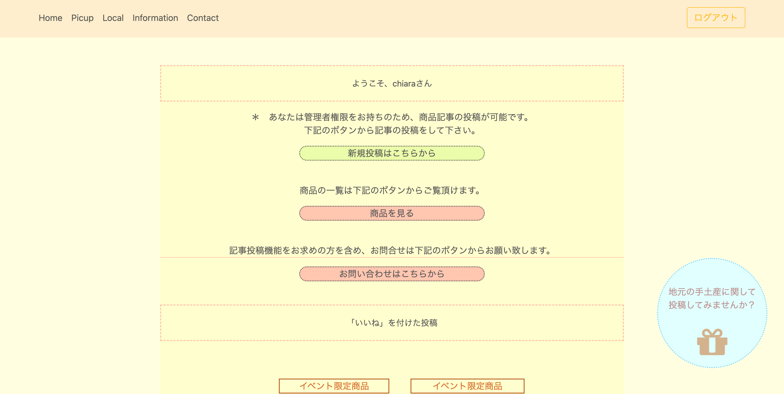
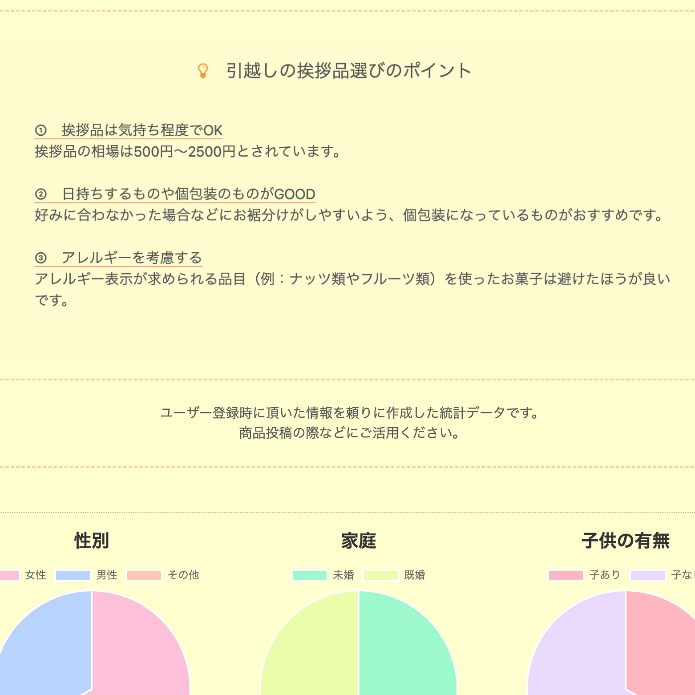
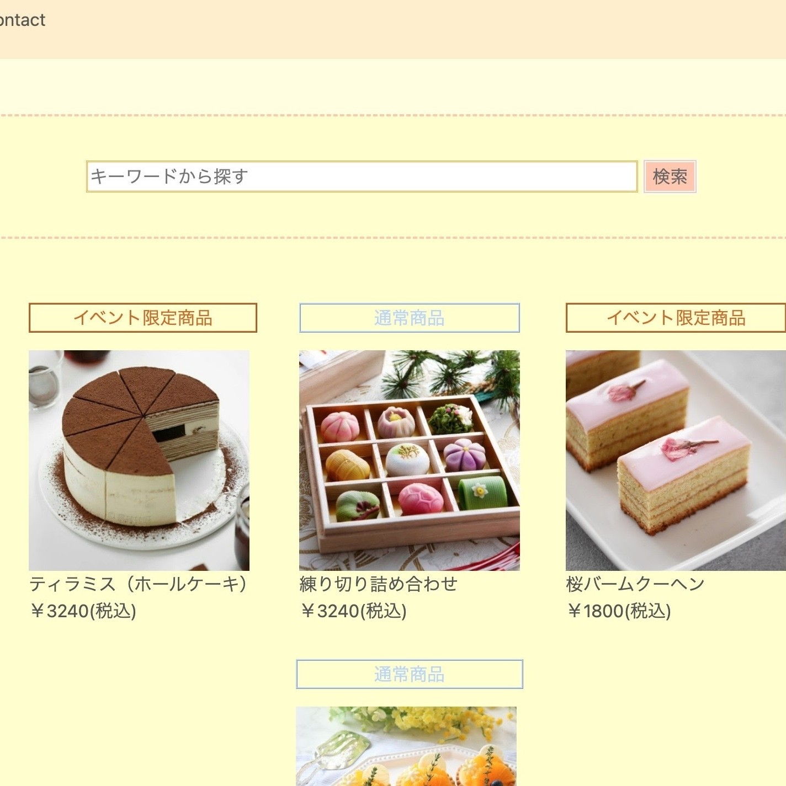

Temiyage（手土産情報共有アプリ）

開発環境
Ruby / Ruby on Rails / MySQL / GitHub / Heroku / Visual Studio Code / Trello
-
概要
制作時間 180時間 GitHub_URL https://github.com/chiapini/temiyage
OUTLINEアプリケーションの概要
オリジナルアプリケーションとして百貨店や駅ナカで販売されている手土産商品の比較および口コミ投稿ができるWebアプリケーションを開発しました。
本アプリは、ユーザーが手土産を選ぶ際に必要な情報を効率よく収集できることを目的としています。主な機能として、ユーザー登録機能、商品記事の投稿・編集・削除機能、お気に入り登録機能、コメント機能、お問い合わせ機能を実装しました。
ユーザーは新規登録を行うことで、商品記事の閲覧やお気に入り登録が可能となります。また、商品情報に加えて、手土産選びに役立つ豆知識コンテンツや、地域ごとの手土産に関する情報をユーザー同士で共有できるページも用意し、情報の幅を広げました。
商品記事の投稿機能については、当初は一般ユーザーにも開放することを検討していましたが、情報の信頼性や品質の低下が懸念されたため、投稿権限を企業側のみに制限しました。
その一方で、ユーザーの参加性を高めるために、口コミ機能や地域情報の発信機能を実装し、サービスの活性化を図りました。
-
開発に至った経緯
本アプリケーションは、消費者側と企業側の2つの視点から課題を捉え、開発に至りました。
まず消費者側の視点です。
私が洋菓子メーカーに勤務していた際、他社商品のリサーチを行う中で、情報収集に大きな課題を感じていました。まとめサイトには話題性の高い商品しか掲載されておらず、企業の公式サイトでは自社商品のみが扱われているため、横断的な比較が困難でした。また、楽天市場やAmazonといったECサイトでは商品比較自体は可能であるものの、配送を前提とした商品が中心であり、店頭限定の商品などは十分に網羅されていませんでした。 こうした経験から、1つのプラットフォーム上で複数企業の商品を比較できるサービスの必要性を感じました。次に企業側の視点です。
勤務先の洋菓子店では、百貨店のInstagramアカウントを通じて新商品の告知を行っていましたが、館全体の情報発信では食品以外のコンテンツも多く、情報が埋もれてしまうという課題がありました。また、小規模な企業においては自社サイトの構築・運用のハードルが高く、仮に作成したとしても認知度の問題からユーザーに発見されにくいという状況も見受けられました。これらの課題を踏まえ、消費者の「複数企業の商品を一元的に比較したい」というニーズと、企業の「商品PRの機会を増やしたい」というニーズの双方を満たすことを目的として、本アプリケーションの開発に至りました。
-
開発で工夫したこと

本アプリケーションの工夫点は大きく2つあります。
1つ目は、「消費者」と「企業」という2つの立場に立って設計・実装を行った点です。
具体的には、消費者が効率的に情報収集できるよう、手土産選びに役立つ豆知識コンテンツを掲載したページを作成しました。また、企業側がユーザーの属性やニーズを把握し、それに応じたコンテンツを作成できるよう、ユーザー情報をグラフとして可視化する機能を実装しました。2つ目は、第三者からのフィードバックを積極的に取り入れた点です。
家族や友人にアプリケーションを実際に使用してもらい、得られた意見をもとに改善を重ねました。不特定多数のユーザーに利用されることを前提としたサービスであるため、利用者視点を重視しました。その結果、自身では気付けなかった課題や改善点を発見し、サービスの品質向上につなげることができました。これらの取り組みを通して、ユーザー目線を意識した開発を実践することができたと考えています。
-
今後実装したいと思っていること

現状、今後の追加機能として主に以下の2点を検討しています。
1つ目は、検索機能の拡充です。ユーザーが商品を多角的に比較できるようにするため、キーワード検索に加えて、商品の特徴や価格帯などの条件による絞り込み検索を実装したいと考えています。これにより、ユーザーのニーズに応じた商品をより効率的に見つけられるようにすることを目的としています。
2つ目は、ランキング機能の実装です。投稿数の増加に伴い、一覧ページの視認性や利便性の低下が懸念されるため、口コミ数や「いいね」数に基づいたランキングを表示する機能を追加したいと考えています。これにより、人気の商品を直感的に把握できるようにし、ユーザーの意思決定を支援することを目的としています。